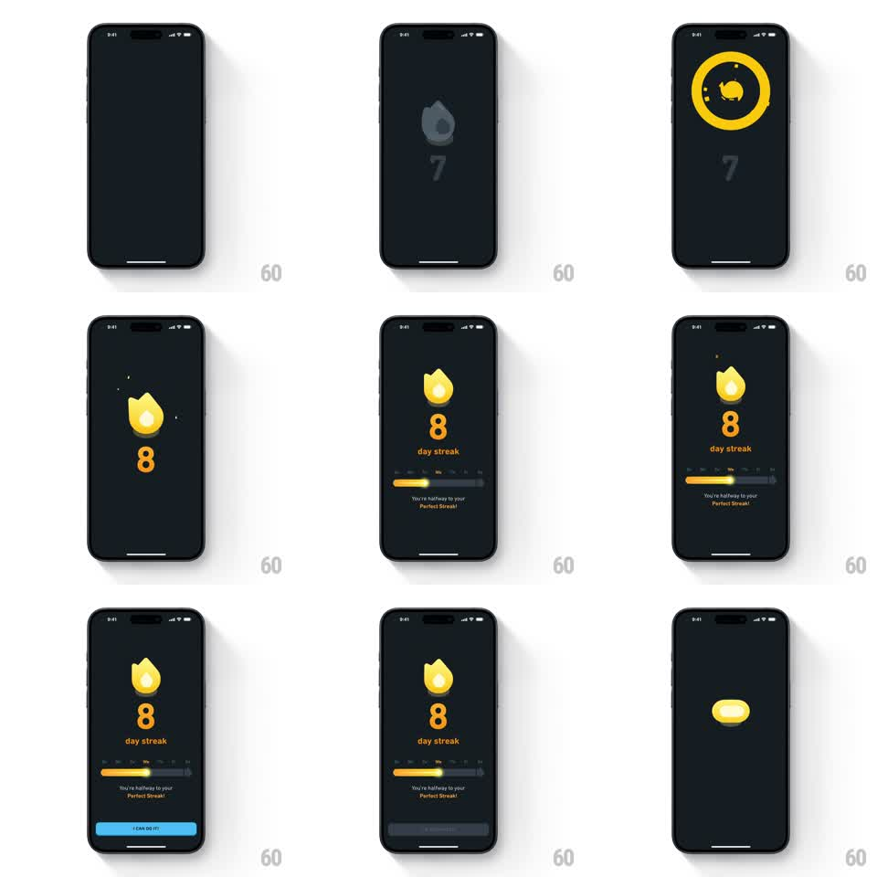

Media
Frame-by-frame

Rebuild this animation 1:1: Duolingo's 8-day streak milestone - the gray flame silhouette ignites into a glowing yellow flame behind a burst ring and sparkles, the counter rolls 7 to 8, a progress bar fills toward "Perfect Streak", and a blue CTA slides up.

Rebuild this animation 1:1: Duolingo's 8-day streak milestone - the gray flame silhouette ignites into a glowing yellow flame behind a burst ring and sparkles, the counter rolls 7 to 8, a progress bar fills toward "Perfect Streak", and a blue CTA slides up. ## Integration Integration: stack-agnostic spec - springs given as stiffness/damping, timed motions as duration + curve; map every value to your framework and animation library of choice. ## Scene Dark charcoal screen. Center: streak flame above a large counter and "day streak" label. Below: a rounded progress track with a yellow fill, milestone ticks, and the caption "You're halfway to your Perfect Streak!". Bottom: blue "I CAN DO IT!" button. Opening beat shows the flame as a flat gray silhouette with the previous count (7); a yellow circular burst ring with orbiting dot sparkles erupts behind it as it ignites. ## Motion spec Pattern: milestone counter reveal with burst ignition. - Ignition: gray flame crossfades to a lit yellow-orange flame (250ms) while a ring burst expands behind it (scale 0.5 -> 1.6, 400ms ease-out, fading out) and 3-4 small spark dots orbit outward. - Counter: rolls from 7 to 8 with a vertical digit slide (250ms, ease-out) plus a scale pulse (1.0 -> 1.2 -> 1.0, 300ms). - Flame does a small celebratory hop (translateY -12pt and back, spring ~350/16). - Progress bar: track fades in (150ms), fill animates from its prior value to the 8-day mark over 700ms (ease-out), caption fades up with it. - CTA button slides up from below the safe area (300ms ease-out, 40pt travel) last. - End beat: the whole composition compresses into a yellow capsule that scales down (300ms) as a transition out. ## Calibration - The ignition burst and the counter roll must land on the same frame - the ring is the exclamation point on the new number. - Yellow flame and ring share one hue (#FFC800); background stays flat dark. ## Reduced motion Flame swaps gray to lit with a 150ms fade; counter sets to 8 instantly; bar fills over 300ms; button fades in without travel. ## Don't miss - The gray-to-lit flame crossfade is the ignition - do not just fade the whole flame in. - Milestone ticks on the progress track stay visible as the fill sweeps past them.